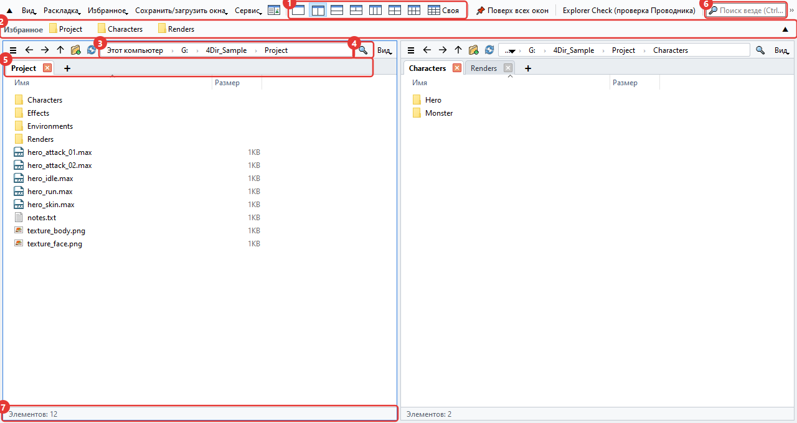
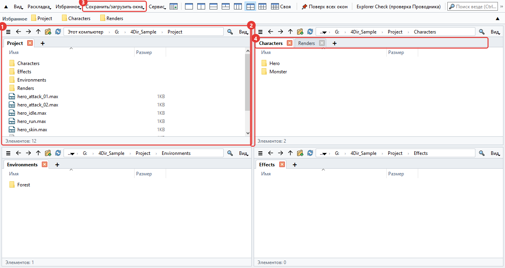
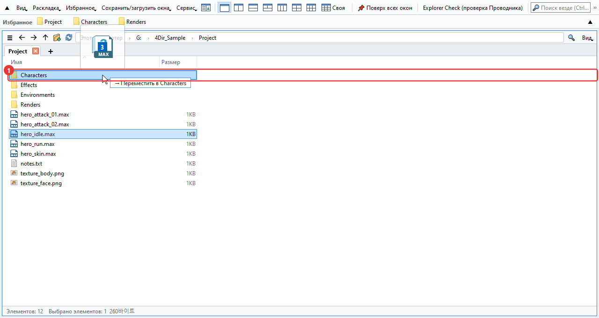
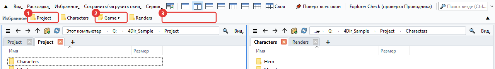
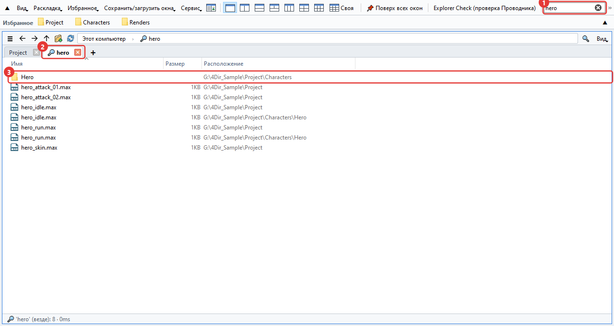
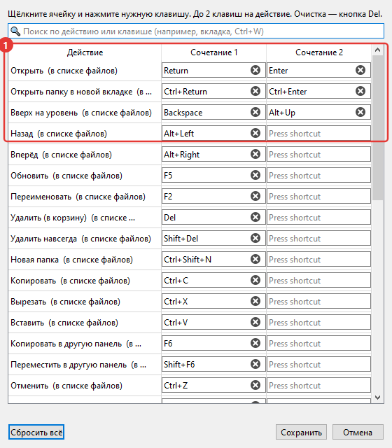
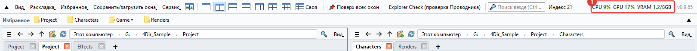
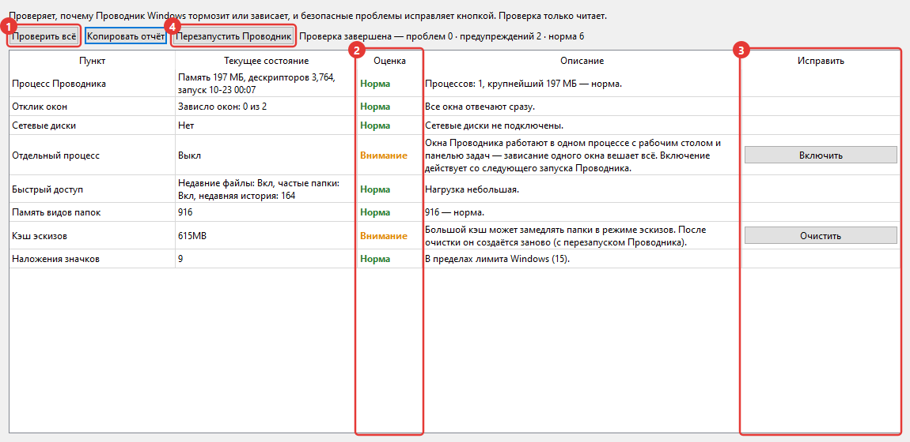

Как пользоваться 4Dir
Здесь описано то, что нужно чаще всего, примерно в том порядке, в каком это понадобится. Красные номера на картинках совпадают с номерами в тексте. Сочетания клавиш почти такие же, как в Проводнике Windows, так что если вы им пользовались, половину вы уже знаете.
Главное окно
4Dir позволяет держать несколько папок рядом в одном окне. Сверху вниз:

- Кнопки раскладки. 1, 2, 3, 4 и 6 панелей — одним нажатием. Последняя, Своя, позволяет задать любое число столбцов и строк (до 5×4).
- Панель избранного. Перетащите сюда папку, которой часто пользуетесь, и появится кнопка. Правой кнопкой мыши её можно переименовать или убрать.
- Адресная строка. Нажмите на любую часть пути, чтобы сразу перейти в эту папку. Если нажать на пустое место справа, путь можно ввести вручную.
- Фильтр. Отбирает файлы в текущей папке по имени. Ctrl+F
- Вкладки. У каждой панели свои вкладки. Открыть — + или Ctrl+T, закрыть — Ctrl+W.
- Поиск везде. Ищет файлы по имени по всему диску. Подробнее ниже, в разделе «Поиск».
- Строка состояния. Показывает число элементов, а также сколько выбрано и их размер.
Панели и вкладки
Каждая панель — это по сути маленький Проводник. Каждая помнит свои вкладки и папки.

- Панель, на которую вы нажали последней, обведена синей рамкой. Сочетания клавиш действуют на неё.
- Перетащите границу между панелями, чтобы изменить их размер.
- В меню Сохранить/загрузить окна можно сохранить текущую раскладку и вкладки под своим именем. Удобно завести по одной на каждую задачу.
- Вкладки можно перетаскивать, чтобы поменять порядок или перенести в другую панель, а если бросить вкладку за пределами окна, она откроется в новом окне. Через правую кнопку её можно открыть и в Проводнике Windows.
Если закрыть 4Dir и открыть снова, вернутся последние панели и вкладки. Если перезагрузить ПК, не закрывая 4Dir, он откроется снова при следующем входе (это можно отключить в меню Сервис).
Перемещение и копирование файлов
Всё как в Проводнике. Пока вы перетаскиваете, папка назначения подсвечивается, а рядом появляется подсказка вроде «→ Переместить в …», чтобы было видно, что произойдёт.

- Папка назначения. На том же диске файлы перемещаются, на другой диск — копируются. Если отпустить с зажатым Ctrl, будет копирование, с Shift — перемещение.
Если панелей несколько, перетаскивать не обязательно. Выделите файлы и нажмите F6, чтобы скопировать в соседнюю панель, или Shift+F6, чтобы переместить.
Ошиблись — Ctrl+Z. Отменяет по одному переименование, создание папки, перемещение, копирование и удаление в корзину.
Если при переименовании через F2 нажать ↓, вы сразу перейдёте к следующему файлу. Если выделить несколько файлов и нажать F2, откроется окно Пакетное переименование.
Меню по правой кнопке — это обычное меню Windows. Пункты архиватора или TortoiseSVN там есть, как и в Проводнике.
Щёлкните правой кнопкой по изображению .webp → Преобразовать WebP → Сохранить как PNG / Сохранить как JPG. В той же папке появится новый файл, а исходный останется (удалите его сами, если он не нужен). Можно выбрать сразу несколько файлов.
Избранное
Папки, которыми вы часто пользуетесь, можно держать кнопками на верхней панели. Сначала она пустая и показывает только то, что вы добавили сами (с панелью быстрого доступа Проводника Windows это никак не связано).

- Кнопка избранного. Нажатие открывает папку в текущей панели. По правой кнопке есть Открыть в новой вкладке, Переименовать и Удалить. Если перетащить файлы на кнопку, они переместятся или скопируются в эту папку.
- Кнопка группы (▾). Объединяет несколько папок из избранного под одной кнопкой. Нажмите — откроется список. Если бросить папку на середину кнопки группы, она попадёт в эту группу.
- Бросьте папку на пустое место или между кнопками — на этом месте появится новая кнопка. Порядок кнопок меняется перетаскиванием. Текущую папку можно сразу добавить через Ctrl+D.
Если разбирать нужно много, откройте Избранное → Упорядочить избранное. Там в одном окне можно удалить сразу несколько, поменять порядок и названия, создать группы и найти папки, которых больше нет. Изменения применятся только после нажатия Подтверждение.
Если кнопки не помещаются в одну строку, нажмите ▼ в правом конце панели. Она развернётся на несколько строк и покажет всё (▲ свернёт обратно в одну).
Чтобы взять папки, закреплённые в Проводнике Windows, выберите Избранное → Импортировать панель быстрого доступа Проводника. Те, что уже есть, пропускаются.
Поиск
Начните вводить текст в поле поиска наверху, и поиск пойдёт сразу. При первом запуске 4Dir один раз составляет список имён файлов на дисках, а потом следит только за изменениями, поэтому работает быстро.

- Поле поиска. Если ввести несколько слов, останутся только имена, где есть все слова. Шаблоны вроде
*.maxтоже работают. Ctrl+Shift+F - Результаты открываются во вкладке с лупой.
- Столбец «Расположение» — это папка, где лежит файл. Двойной щелчок открывает файл, а правая кнопка → Открыть расположение файла ведёт в эту папку.
Какие диски искать, выбирается в Сервис → Область поиска. Сетевые диски поначалу выключены.
Если список ещё не готов или папка вне области поиска, кнопка со стрелкой рядом с фильтром сразу прочешет всё внутри текущей папки.
Если вы пользуетесь SVN
Если рабочая папка под SVN, на файлах и папках появляются значки состояния. Если установлен TortoiseSVN, значки те же, что в Проводнике.

- Зелёная галочка: без изменений. Для папки учитывается всё её содержимое.
- Красный восклицательный знак: изменено. На папке это значит, что где-то внутри есть незакоммиченные изменения.
- Синий плюс: будет добавлен (ещё не закоммичен).
- Серый вопросительный знак: файл не под контролем версий.
Кнопки на панели избранного получают такие же значки, так что сверху сразу видно, в каких папках есть незакоммиченное.
Большие рабочие копии при первой проверке требуют нескольких секунд. В это время в строке состояния написано «Проверка SVN». Если значки не нужны, выключите Вид → Показать → Показывать состояние SVN.
Как поменять сочетания клавиш
В Сервис → Сочетания клавиш для каждой функции задаётся нужная клавиша. На одну функцию можно назначить до двух сочетаний.

- Нажмите на поле и нажмите нужную клавишу — она сразу сменится. Если клавиша уже занята, вы увидите предупреждение.
Самые ходовые: Ctrl+T новая вкладка, Ctrl+W закрыть вкладку, Ctrl+N новое окно, Ctrl+L адресная строка, Ctrl+Shift+C копировать путь, Alt+Enter свойства.
Загрузка ЦП и ГП
Это сделано, чтобы видеть, насколько загружен ПК, пока идёт рендер в 3ds Max или запущена игра. Цифры показываются справа на верхней панели.

- CPU: загрузка всего ПК. GPU: загрузка видеокарты. VRAM: занятая/вся память видеокарты (ГБ). Выше 60% цифры становятся оранжевыми, выше 85% — красными. Обновляются раз в 1,5 секунды, а если навести мышь, видно название видеокарты.
GPU и VRAM показываются только на видеокартах NVIDIA. С другими видеокартами виден только CPU.
Занятость оперативной памяти (RAM) не показывается. Если нужно, загляните в диспетчер задач (Ctrl+Shift+Esc).
Отключить: Вид → Показывать загрузку ЦП·ГП. Когда окно свёрнуто, обновление само останавливается. Если окно узкое, показатели уходят в » в конце строки меню.
Проверка Проводника (Explorer Check)
Инструмент на случай, когда Проводник Windows часто зависает или тормозит. Открывается кнопкой Explorer Check (проверка Проводника) на верхней панели или через меню Сервис. Проверка начинается сразу после открытия. Она только читает данные и ничего не меняет.

- Проверить всё: проверяет заново. Смотрит память Проводника, отклик окон, сетевые диски, отдельный процесс для окон папок, недавние элементы, запоминание вида папок, кэш эскизов, число значков-наложений, недавние аварийные завершения и другое.
- Итог: Норма / Внимание / Проблема / Справка. В соседнем столбце написана причина.
- Кнопка исправления. Появляется только там, где можно что-то исправить. Перед этим ещё раз спросит и скажет, что именно поменяет, и трогает только настройки и папки текущего пользователя.
- Перезапустить Проводник: закрывает и снова запускает Проводник, если он завис. Открытые окна Проводника закроются.
Копировать отчёт копирует результат текстом. Если будете спрашивать о проблеме, приложите его — так причину найти будет быстрее.
Прочее
- Светлая/тёмная тема и язык — в меню Вид. Язык сменится после перезапуска 4Dir.
- Если 4Dir ведёт себя странно, выберите Сервис → Сохранить журнал для отчёта о проблеме и отправьте получившийся zip на support@4dir.net. По журналу мы найдём причину.